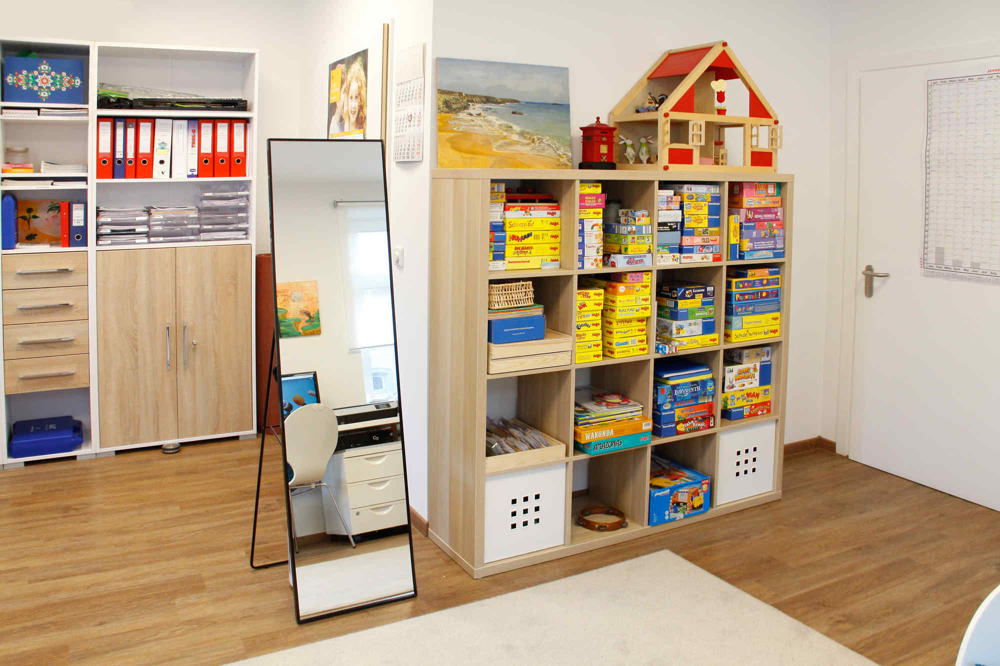
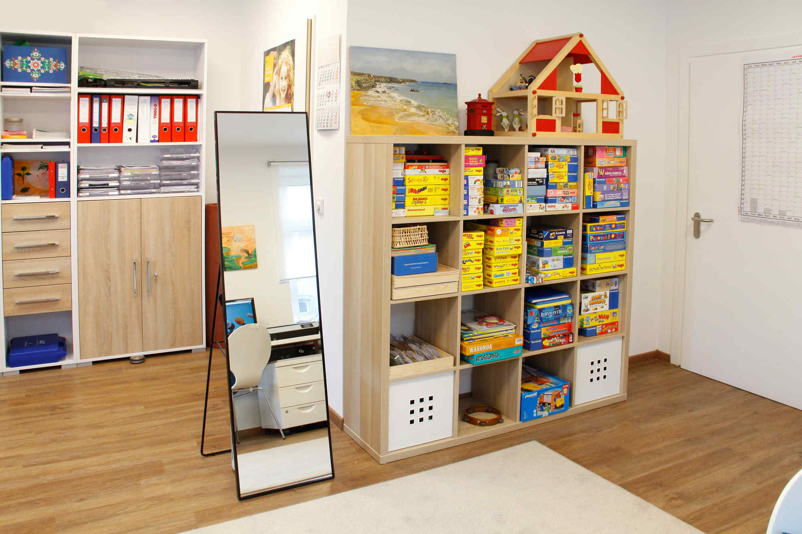

Kosten und Verordnung
Die Kosten für die Behandlung werden bei Kindern von den gesetzlichen Krankenkassen zu 100 % übernommen. Erwachsene, ab 18 Jahren, zahlen 10 Euro Verordnungsgebühr plus 10 % vom Wert der Verordnung.
Logopädie ist ein Heilmittel und muss ärztlich verordnet werden.
Folgende Ärzte dürfen sogenannte Heilmittelverordnungen (Rezepte) für eine logopädische Behandlung ausstellen:
- Hausärzte
Allgemeinmedizin, Praktische Ärzte - Kinderärzte
Fachärzte der Pädiatrie - HNO-Ärzte
Fachärzte für Hals-Nasen-Ohrenheilkunde - Phoniater und Pädaudiologen
Fachärzte für Sprach–, Stimm– und Hörstörungen - Internisten
Fachärzte für innere Medizin - Neurologen
Fachärzte für Neurologie - Zahnärzte und Kieferorthopäden
Beschwerdebilder
Hier finden Sie eine grobe Übersicht der Beschwerdebilder die wir behandeln; ebenso eine Reihe von Abkürzungen und Fachbegriffen die Sie auf den ärztlichen Verordnungen wieder erkennen können.
Sprechen
- Artikulationsstörung (Dyslalie)
- Aussprache (Artikulation)
- Redeflussstörung (Stottern, Poltern)
Sprache
- Entwicklungsstörung der Sprache im Kindesalter (z.B. Dysgrammatismus, eingeschränkter Wortschatz)
- Sprachverständnisstörung und/oder Aussprachestörung
- Auditive Verarbeitungs- und Wahrnehmungsstörung. Die Inhalte, Wortbedeutungen, der gehörten Sprache werden nicht erkannt. (AVWS)
Muskel- und Nerven-Beeinträchtigungen
- Beeinträchtigung der Gesichtsmuskulatur oder der Zungenfunktion, z.B. falsches Schluckmuster
- Muskuläre Störungen (z.B. Myofunktionelle Störung, orofaziale Dysfunktion)
- Nervenlähmungen (z.B. Facialisparese, Hypoglossusparese)
Andere Störungen oder Erkrankungen
- Organisch oder funktionell bedingte Stimmstörung (Dysphonie)
- Konzentrations- und Aufmerksamkeitsstörung (ADHS)
- Rechenstörung (Dyskalkulie)
Neurologische Erkrankungen
- Zentrale Sprech- und Sprachstörung bei neurologischen Erkrankungen wie z.B. bei Morbus Parkinson/Parkinsonsyndrom oder auch nach einem Schlaganfall oder Schädel- Hirn-Trauma. (Aphasie, Dysarthrie, Sprechapraxie)
Schlucken
- Schluckstörung (Dysphagie)
Nach Operation
- Stimmverlust nach Kehlkopfoperation (Laryngektomie)
Angeborene Defekte
- Näseln, häufig im Rahmen von Lippen-Kiefer-Gaumen-Spalten (Rhinophonie)
Sie finden nicht das Richtige, sind sich nicht sicher oder haben weitere Fragen: Sprechen Sie uns an. Wir beraten Sie gerne.
Anmeldung und Behandlung
Hier ist der typische Ablauf vom Beginn an bis zur Behandlung beschrieben und welche Begleitumstände es gibt.
Kontaktaufnahme
Anmeldungen werden telefonisch, persönlich und per E-Mail entgegengenommen, sie gelten erst nach Terminbestätigung durch die Praxis als verbindlich.
Die erste Therapieeinheit
Nach unserem Kennenlernen, wird sowohl eine ausführliche störungsspezifische Befunderhebung als auch eine Anamnese durchgeführt. Dabei werden die beteiligten Bereiche mittels verschiedener Testverfahren näher untersucht, die für die Beurteilung und Behandlung relevant sind.
Die Ergebnisse bilden, zusammen mit der ärztlichen Diagnose und den Informationen aus dem Anamnesegespräch, die Grundlage für die Behandlung.
Therapiefrequenz und –dauer
Die Therapie findet als Einzeltherapie regelmäßig 1 wöchentlich statt (bis 5 möglich) und dauert in der Regel 45 Minuten, in besonderen Fällen auch 30 oder 60 Minuten.
Weiterer Therapieverlauf und Absprache mit dem Arzt
Der verordnende Arzt erhält von uns, nach Ablauf eines Rezepts, einen Therapiebericht über den aktuellen Behandlungsstand. Dieser Bericht kann als Grundlage für eine Folgeverordnung und zur Begründung der Weiterbehandlung herangezogen werden.
Hausbesuch
Liegt eine entsprechende ärztliche Verordnung vor, kommen wir gerne zu Ihnen nach Hause.
Praxis
 



Unser Team

Ich bin Jutta Kimm, Examinierte Krankenschwester, Staatlich anerkannte Logopädin und Zertifizierte LSVT® LOUD–Therapeutin
Meine Arbeitsschwerpunkte
- Neurologische Störungsbilder z.B. Schlaganfall, MS Parkinson, Multiple Sklerose
- Störung des Sprechens und der Sprache (Aphasie, Dysarthrie, Sprechapraxie) sowie Schluckstörung (Dysphagie) und Stimmstörung (Dysphonie)
- LSVT® LOUD Therapie
- Sprech- und Sprachstörung im Kindesalter (Dyslalie)
- Sprachentwicklungsstörung (SES mit Dysgrammatismus)
- Störung der Muskulatur im Mund- und Gesichtsbereich (Behandlung Myofunktionelle Störung nach M.U.N.D.T®)
- Organisch oder funktionell bedingte Stimmstörung (Dysphonie)
- Lähmung der Gesichtsmuskulatur (Fazialisparese)
Ich besuche regelmäßig Fortbildungen und Seminare, um mein Fachwissen zu vertiefen.

Ich bin Dorothea Posselt, staatlich anerkannten Logopädin seit 2004 sowie Zertifizierte Kon-Lab-Therapeutin.
Meine Fachschwerpunkte bei der Behandlung von Kindern ab 2 Jahren
- Sprachentwicklungsstörungen, Fachtherapeutin für Sprachentwicklungsstörungen mit Defiziten im Bereich Sprachverständnis, Wortschatz und Grammatik
- Sprech- und Sprachstörungen bei Kindern (Undeutliche Aussprache, Dyslalie & phonologische Störungen)
- Auditive Verarbeitungs- und Wahrnehmungsstörungen (AVWS)
- Störung des Schluckablaufs und der Muskelfunktion im Mund- und Gesichtsbereich (Myofunktionelle Störung)
Meine Arbeitsschwerpunkte bei Erwachsenen
- Sämtliche neurologischen Störungsbilder z.B. Schlaganfall, Parkinson oder MS mit Störungen der Sprache und des Sprechens (Aphasie und/oder Sprechapraxie), Stimmstörungen (Dysarthrophonie) sowie bei Schluckstörungen (Dysphagie)
- Ebenso Schluckstörungen nach Operationen/ Tumoren im Mund-Hals Bereich, inklusive Trachealkanülen-Management
- Lähmungen der Gesichtsmuskulatur (Fazialisparese)
- Hörtraining nach Cochlea Implantat (CI)-Versorgung bei Erwachsenen
Mein Fachwissen halte ich durch regelmäßige Fortbildungen auf aktuellem Stand.
Hinkommen
Praxis – im 2.Stock
Über den Haupteingang führt ein Aufzug oder eine große Treppe direkt in die Praxis im 2. Stock.
Barrierefreier Zugang
Für einen vollständig barrierefreie Zugang nutzen Sie bitte den Toreingang ganz links. Ein Aufzug ist vorhanden, der Sie direkt in die Praxis im 2. Stock bringt.
Parken
-
Parkplatz Fürther Freiheit/ Friedrichstraße
1 Behindertenparkplatz -
Parkhaus Park One GmbH – Friedrichstraße 13-15
3 Behindertenparkplätze
7 Frauenparkplätze -
Parkhaus – Neue Mitte Fürth – Moststr. 14
8 Behindertenparkplätze
Öffentlicher Nahverkehr
-
Mit dem Bus
Haltestelle „Fürther Freiheit“
Bus: 33, 37, 39, 173, 174, 177, 178, 179
Haltestelle „Fürth Hauptbahnhof“
Bus: 67 -
Mit der Bahn
Haltestelle „Fürth Hauptbahnhof“
Regionalbahn: R1, R11, R12
S-Bahn: S1 -
Mit der U-Bahn
Haltestelle „Fürth Hauptbahnhof“
U-Bahn: U1
Jutta Kimm
Praxis für Logopädie
Fürther Freiheit 2a
90762 Fürth
Tel: (0911) 74 678 123
E-Mail: info@logokimm.de
Schreiben Sie mir!
Die Patienten und deren Therapiezeiten bestimmen unseren Tagesablauf. Aus diesem Grund sind wir nicht durchgehend telefonisch erreichbar.
Schreiben Sie mir bitte Ihren Namen, Ihre Telefonnummer sowie die Zeit zu der Sie am Besten zu erreichen sind.
Wir melden uns telefonisch noch am selben Tag. So zeitnah es nur geht.
Ihre Jutta Kimm